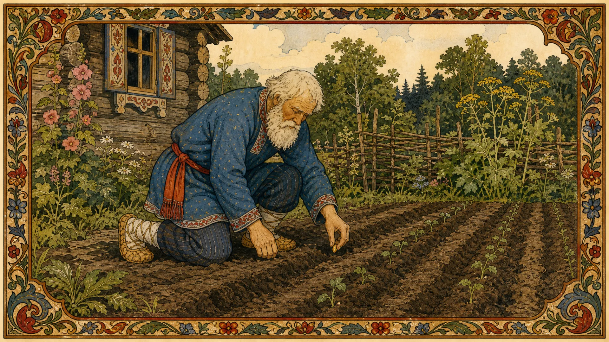
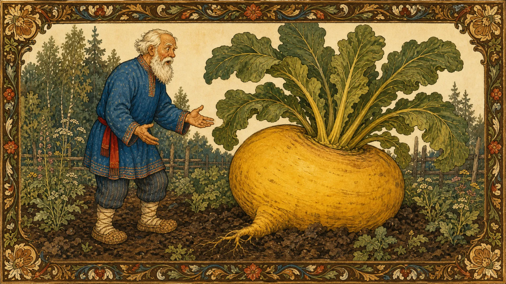
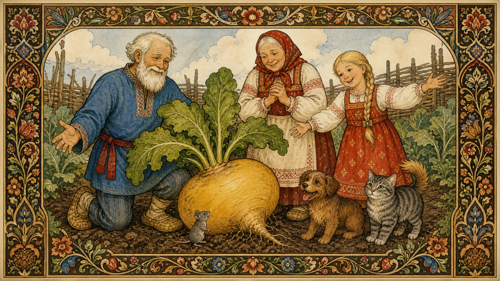

Посадил дед репку и говорит:
— Расти репка сладкая-сладкая! Расти большая-пребольшая!
Выросла репка

сладкая и большая-пребольшая.
Пошел дед репку рвать: тянет-потянет, вытянуть не может.
Позвал дед бабку.
Бабка за дедку, Дедка за репку — Тянут-потянут, вытянуть не могут.
Позвала бабка внучку.
Внучка за бабку, Бабка за дедку, Дедка за репку — Тянут-потянут, вытянуть не могут.
Позвала внучка Жучку.
Жучка за внучку, Внучка за бабку, Бабка за дедку, Дедка за репку — Тянут-потянут, вытянуть не могут.
Позвала Жучка кошку.
Кошка за Жучку, Жучка за внучку, Внучка за бабку, Бабка за дедку, Дедка за репку — Тянут-потянут, вытянуть не могут.
Позвала кошка мышку.
Мышка за кошку, Кошка за Жучку, Жучка за внучку, Внучка за бабку, Бабка за дедку, Дедка за репку — Тянут-потянут — и вытянули репку.
Вот и сказке конец, а кто слушал — молодец!
